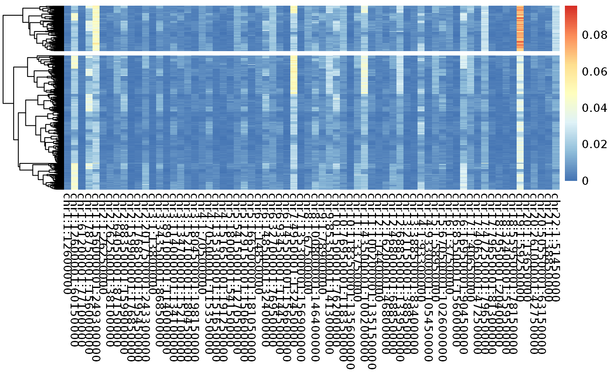
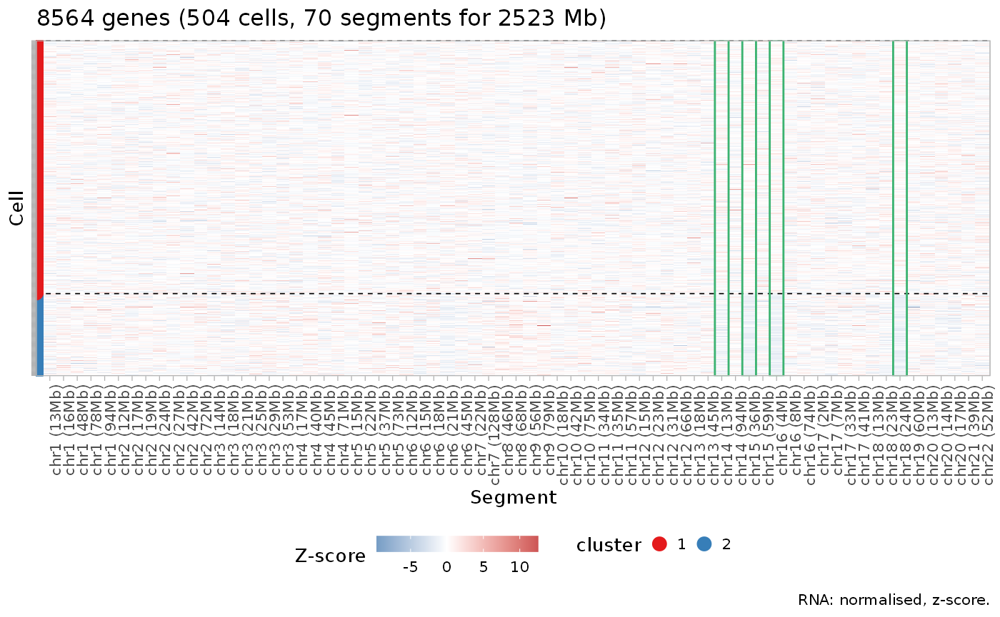
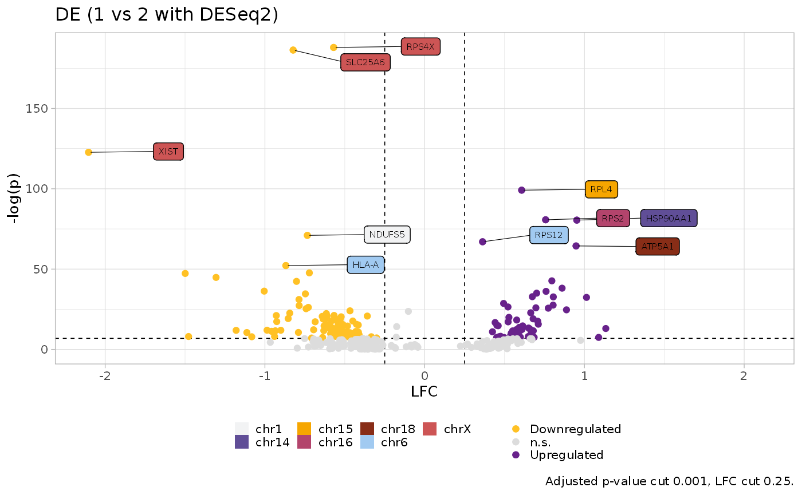

This is an example analysis with a dataset of trple-negative breast cancer, sequenced with 10x. The data has been obtained from Campbell at al 2019 and is currently available at [https://zenodo.org/record/2363826#.YBQHtsIo9hE]
#Read teh data
library(Matrix)
counts_SA <- as.matrix(t(readMM("clonealign-processed-data/SA501/10X/20171026_SA501X2XB00096/outs/filtered_gene_bc_matrices/hg19/matrix.mtx")))
genes <- read.table("clonealign-processed-data/SA501/10X/20171026_SA501X2XB00096/outs/filtered_gene_bc_matrices/hg19/genes.tsv")
barcodes <- read.table("clonealign-processed-data/SA501/10X/20171026_SA501X2XB00096/outs/filtered_gene_bc_matrices/hg19/barcodes.tsv")
colnames(counts_SA) <- genes$V2
rownames(counts_SA) <- barcodes$V1## Loading Rcongas## ✓ Loading Rcongas, 'Copy-Number genotyping from single cells'. Support : <https://militeee.github.io/Rcongas/>We first do a bit of preprocessing as filtering for cells with few expressed genes
library("rcongas")
mat_pre <- as.matrix(preprocess_sc(mat = counts_SA, filter_upper_quantile = T, perc_cells_gene_expr = 0.05,upper_quantile = 0.95))Then we load the CN profile of the most abundat clone, and we consider it was a result obtained from bulkDNA analysis (as this clone A compose around the 80% of the total cells, we suppose an hypothetical CNV inference from bulkDNA to mostly represent its profile).
#read the clones data and add chr on front of the names
clones_dataA <- read.csv("clonealign-processed-data/SA501/cnv/SA501X3F-cluster_A.segments.csv")[,c(1,2,3,7)]
clones_dataA$tot <- clones_dataA$integer_copy_number
clones_dataA$chr <- paste0("chr", clones_dataA$chr)
# Aggregate counts on segments
inp2 <- get_data(t(mat_pre), cnv_data = clones_dataA, type = "fixed_binning", startsWithchr = F, correct_bins = T, genome = "hg19", custom_gene_matrix = counts_SA)
#Filter for lowly expressed segments
inp3 <- filter_segments.rcongas(X = inp2, filter_mu = 30)
# exploratory analysis
pheatmap::pheatmap(((inp3$data$counts / rowSums(inp3$data$counts)) ) / inp3$data$cnv$ploidy_real, show_rownames = F, show_colnames = T, cluster_cols = F, cutree_rows = 2)
After an exploratory analysis with an heatmap we can run CONGAS. We first run it to calculate the MAP values for the CNV LogNormal distributions. We then filter for small clusters.
set.seed(3)
# Perform the inference
res <- best_cluster(inp3,model = "MixtureGaussian", clusters = 1:4, steps = 800, lr = 0.01, param_list = list("theta_scale" = 3.2, "theta_rate" = 1, "cnv_var" = 0.50) , method = "BIC", MAP = T, posteriors = T, step_post = 100)
#Filter for small clusters
res_filt <- filter_clusters(res, abundance = 0.03)
#counts plot
plot_counts_rna_segments(res_filt, z_score = T, normalised = T)## ✓ Loading CNAqc, 'Copy Number Alteration quality check'. Support : <https://caravagn.github.io/CNAqc/> After that we can use our MAP estimates as a starting point to learn the full mean and variance of the LogNormals.
# rerun with full Bayesian model
rerun <- run_complete(res_filt)RCONGAS comes with a function to quickly calculate differentially expressed genes between two clones.
# differential expression
library(Seurat)
de <- calculate_DE(rerun, counts_SA[rownames(mat_pre),] %>% t, clone1 = "1", clone2 = "2", method = "DESeq2")
plot_DE_volcano(de)